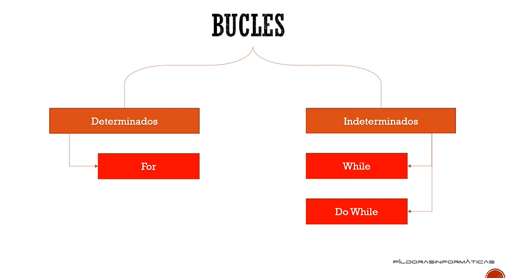

Los bucles permite que se repita el codigo hasta que se cumpla la condición dada.

Los bucles permite que se repita el codigo hasta que se cumpla la condición dada.
La diferencia con el bucle While es que cuando se ejecuta el programa y la condición es falsa, si se ejecuta al menos una vez el código que hay dentro del bucle.
Nombre:
Edad:
Ciudad: